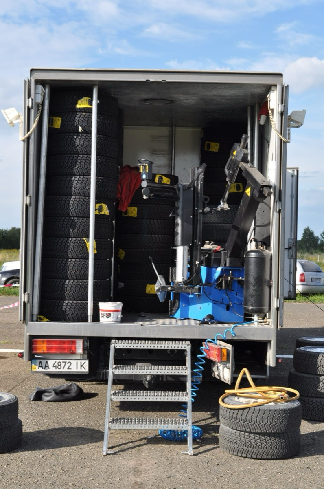
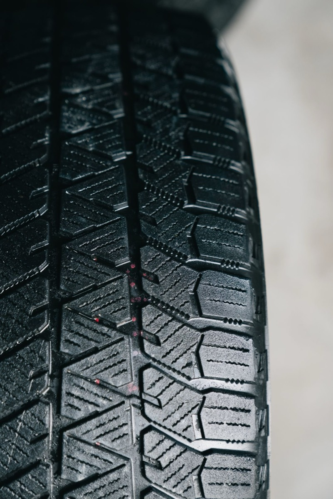
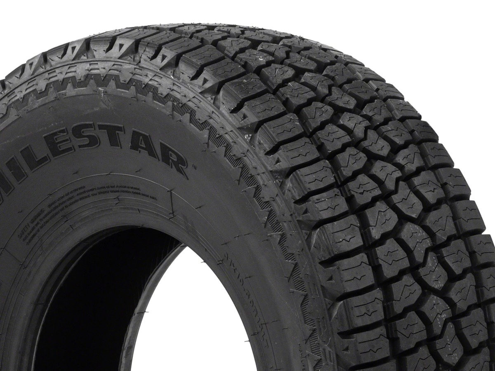
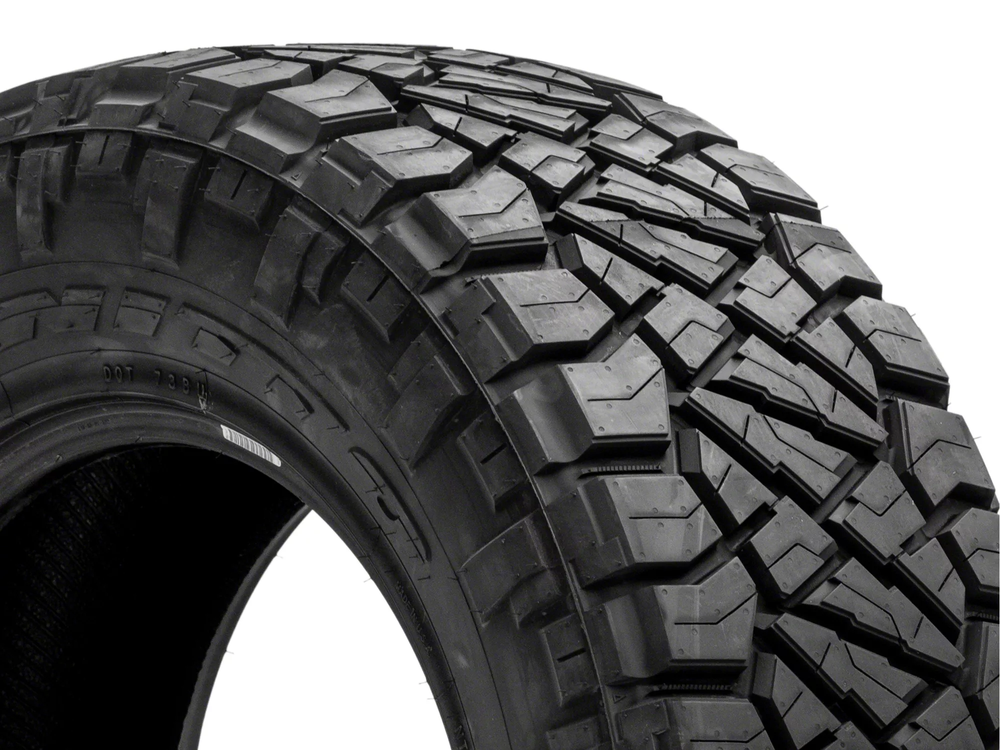
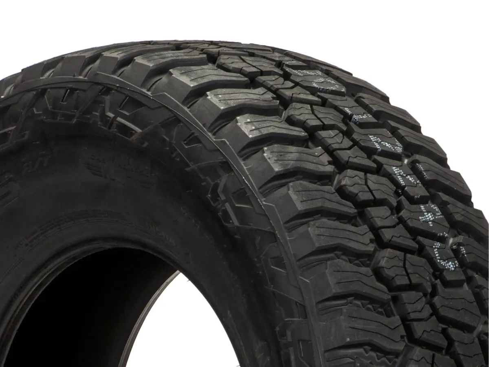

Tires for a Mostly-Street 4x4: Load Range, Size, and the E-Rated Trap
Tires are the highest-return modification on any truck, and the one most often bought for the wrong reasons. The typical mistake is buying for the truck you imagine driving (mud, rocks, a hunting lease) when 90% of your miles are commuting and the occasional trailer. Here's how to think about it wit
Tires are the highest-return modification on any truck, and the one most often bought for the wrong reasons. The typical mistake is buying for the truck you imagine driving (mud, rocks, a hunting lease) when 90% of your miles are commuting and the occasional trailer.
Here’s how to think about it without the marketing.
Start with load, not looks
Load index is the number that decides whether your tire is correct for the truck, and the only figure that actually tells you is on your own door jamb sticker — not a brochure, not a forum post.
Here is how to read it. The sticker lists a GAWR (gross axle weight rating) for each axle. Divide the heavier one by two and you have the load each front or rear tire must carry, fully loaded. A typical half-ton 4x4 crew cab lands somewhere around 5,000–5,800 lb curb weight depending on cab, engine and equipment, so the rear axle figure is the one that matters if you tow or haul.
Two ratings you will see in half-ton sizes:
- Load Range SL (Standard Load). Typically around 2,600–2,800 lb per tire in the common sizes. Adequate for a half-ton that tows occasionally and doesn’t carry near max payload.
- Load Range E. Around 3,400 lb per tire. This is what people default to for “heavy duty” credibility.
The E-rated trap: Load Range E tires carry much higher maximum inflation pressures and have substantially stiffer sidewalls. On a 5,000 lb half-ton running light, that stiffness means a harsh ride, worse small-bump compliance, and, the part nobody mentions, less contact patch grip because the tire doesn’t conform to the road. An E-rated tire on an empty half-ton is over-specification, and you feel it every single mile.
Buy E-rated if you actually tow near the truck’s published capacity — for half-ton pickups that is now anywhere from roughly 8,000 lb to over 13,000 lb depending on cab, engine, axle ratio and equipment. Your own owner’s manual has the figure for your configuration. If you are not close to it, SL is the better tire for how you actually use the truck.

What the Size Number Decides
Bigger tires look right on these trucks and cost you in specific, measurable ways:
| Change | Real cost |
|---|---|
| Taller tire (larger diameter) | Speedometer and odometer read low; effective gear ratio drops; acceleration and towing feel softer |
| Wider tire | More rolling resistance, more hydroplaning risk in standing water, more unsprung weight |
| Heavier tire (LT construction, aggressive tread) | Rotating mass is worth ~3x static mass for acceleration; braking distance grows |
The 4x4 drivetrain adds one rule: keep all four tires matched in diameter. A mismatch of even a few tenths of an inch in circumference between front and rear loads the transfer case continuously on pavement. This is the single most expensive tire mistake you can make on a 4x4, and it’s why you should never replace just one tire on these trucks.

Tread, Matched to Use
Highway/all-season (H/T, AS): Best for a truck that commutes and tows. Quiet, long-wearing, best wet braking, best fuel economy. If you go off pavement twice a year onto gravel, this is the correct tire.
All-terrain (A/T): The reasonable compromise and the most popular category here. Look for a three-peak mountain snowflake (3PMSF) rating if you see real winter. That’s an actual certification, not marketing. A/Ts cost you roughly 1–2 mpg and some wet braking versus an AS tire.
Mud-terrain (M/T): Loud, poor wet grip on pavement, wears fast, and genuinely worse in most situations a street-driven truck encounters. Buy these only if you’re actually in mud.

The pressure question
Run the pressure on the door jamb, then adjust by load. The door jamb figure is for the truck at its rated payload condition, which is not how most of us drive it empty. A chalk test is free and tells you more than any forum post: coat a strip of the tread across its width with chalk, drive straight a short distance on dry pavement, and look at the wear pattern. Worn in the center means over-inflated; worn on both edges means under-inflated; even wear means you’re right.
Do this once with the truck empty, once loaded, and you’ll know your two numbers. Check pressures monthly, because truck tires lose about 1 psi per month and about 1 psi per 10°F of temperature drop.
Rotation and the 4x4 rule
Rotate every 5,000–7,500 miles, and on a 4x4 use a cross-pattern rotation that keeps all four tires within a small circumference window. Skipping rotations on a 4x4 doesn’t just wear tires unevenly. It creates the diameter mismatch that eats transfer cases.
What to put on the truck
For a half-ton 4x4 that mostly commutes and tows occasionally:
SL-rated all-terrain tires in the factory size, 3PMSF if you have real winters, rotated on schedule, pressure set by chalk test. Buy the tire for the driving you do, not the driving in the brochure. If you later find yourself actually towing near capacity regularly, move up to E-rated at that point, and budget for the ride quality change.
The performance gain from a good tire over a cheap one is larger than the gain from most bolt-on engine parts. Spend here first.
Three all-terrains that fit, priced honestly
Prices and review counts as the listings showed them on 4 November 2026. All of these are 33-inch all-terrains, which is the size most people land on for a mostly-street 4x4 — big enough to look right, small enough not to demand a regear or a lift.

Milestar Patagonia A/T R (33" — 285/70R17)
The Patagonia is the tire this guide's argument points at: an all-terrain that costs half what the boutique brands charge and, on the review count available, does not appear to be failing in the way cheap tires usually fail. Fifty-four reviews is enough to see a pattern, not enough to be certain.
Be honest about what the price buys and what it doesn't. A tire at $177 is not going to match a Mickey Thompson for wet grip at the limit or for treadlife under a loaded truck. For commuting, occasional towing and winter that is mostly cold rain, it is the rational purchase.
The distribution says the same thing more precisely: 81% five stars, 13% four, and about 2% at each of three, two and one. That is a wider spread than the other two tires here, which is what a cheaper tire looks like in review data — most owners happy, a small tail of real complaints rather than a uniform chorus. The most useful one is a three-star about wear over time: "I put these on my F150 4x4 as a less expensive alternative and I liked them initially. Not a negative review but over a couple seasons of wear I experienced that they [...]" That owner's point is the one this guide makes above: the price is paid up front and the treadlife is paid later. Set that against "This is my second set. Low noise and great durability for many years" and you have the honest picture — a tire that some owners buy twice and others find goes off after a few seasons.
- Price
- $176.95 each
- Size
- 285/70R17 — approx. 33"
- Type
- All-terrain
- Owner reviews
- 54
See the Patagonia A/T R → list price checked 4 Nov 2026

NITTO Ridge Grappler A/T (33" — 285/70R17)
The Ridge Grappler is what people buy when they want the aggressive sidewall look without the mud-terrain noise, and it is the middle of this group on price. NITTO has a long reputation on trucks and the listing carries a working review count.
It is roughly $120 a corner more than the Milestar — about $480 across four. Whether that is worth it depends on how much of your driving is wet or loaded. If you tow regularly, yes. If you commute, the honest answer is that you are buying appearance as much as grip, and that is a legitimate thing to buy as long as you know that is what it is.
- Price
- $300.00 each
- Size
- 285/70R17 — approx. 33"
- Type
- All-terrain, aggressive sidewall
- Owner reviews
- 33
See the Ridge Grappler → list price checked 4 Nov 2026

Mickey Thompson Baja Boss A/T (33" — 285/70R17)
The Baja Boss is the one to buy if you actually use the truck, because it is the tire here most likely to be offered in a heavier load range for towing — and this article has spent several sections explaining why that matters. It is within $8 of the NITTO, so the choice between them is about which construction you can actually get in your size, not about price.
Mickey Thompson is a name with a real off-road history rather than a marketing department, and 41 reviews is a reasonable evidence base. What those 41 reviews show is the narrowest spread of the three tires — 97.6% five stars, 2.4% four, and nothing below that. Treat a 4.98 average with some suspicion on principle, because a perfect score on a wear item usually means the sample is young rather than that the tire is flawless. These owners are describing the first impressions of a new tire, and the words are consistent across them: "Rides smooth no drone", "Smooth ride quality and easy to balance", "Less road noise and handle well. Definitely worth the extra money."
None of that is a treadwear claim, and this page does not make one. It is the strongest evidence here that the tire does what an all-terrain is supposed to do on the road, from the smallest but cleanest sample in the guide.
- Price
- $307.89 each
- Size
- 285/70R17 — approx. 33"
- Type
- All-terrain
- Owner reviews
- 41
See the Baja Boss A/T → list price checked 4 Nov 2026
These listings quote sizes, not load ranges, and the load range is the whole subject of this article. Confirm the load range on the specific SKU before ordering — the same tyre name is often sold in both SL and E, and the listing does not always make it obvious which you are buying.
We have not tested wet braking, treadlife or snow performance on any of these, and none of the listings publishes measured data. Review counts are reported instead of average scores because star ratings render inconsistently across these pages.
Topics
- Wheels & Tires
- NITTO
- Milestar
- Mickey Thompson